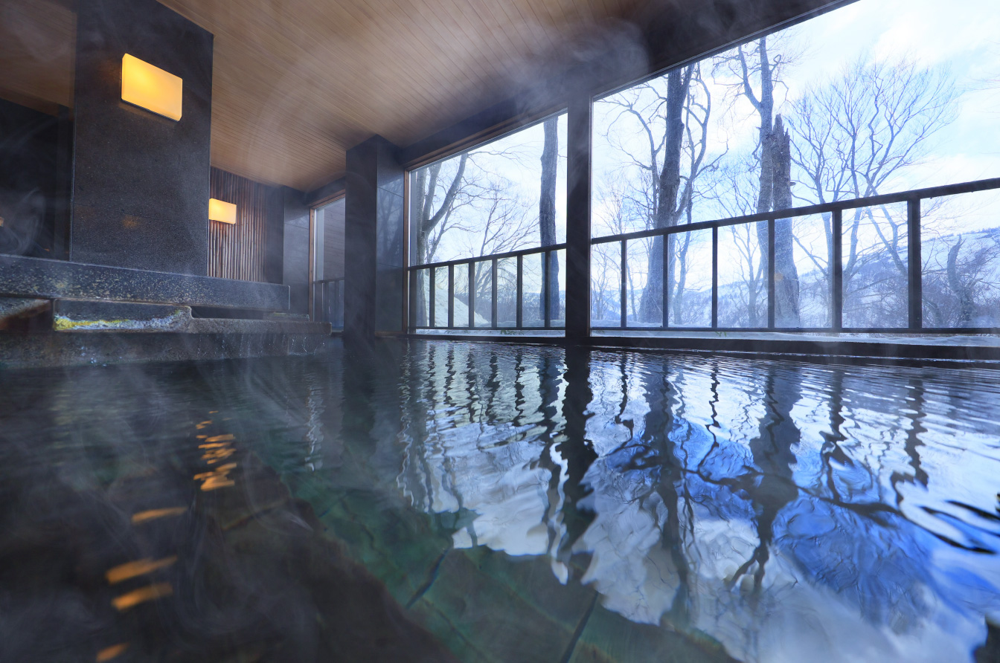

～こだわり抜いた有名ホテル～
八甲田ホテル (青森)
青森・八甲田ホテルを聞いたことがある人は多いのではないだろうか。
豊かなブナの原生林に囲まれた建物、約2,000m²もの木材を使用した完全木造…挙げればきりがない。
木造の重厚なエントランスをくぐれば、びっくり。
細やかな装飾とこだわりのインテリアは見る者の目を楽しませる。
温泉は無色透明だが酸性。窓からは自然のブナの原生林が望む。
姉妹館「酸ヶ湯温泉」にも無料で送迎有。
自然の雄大さに身体を静めながら、こだわりのレストランで洋食を楽しめば極楽浄土。